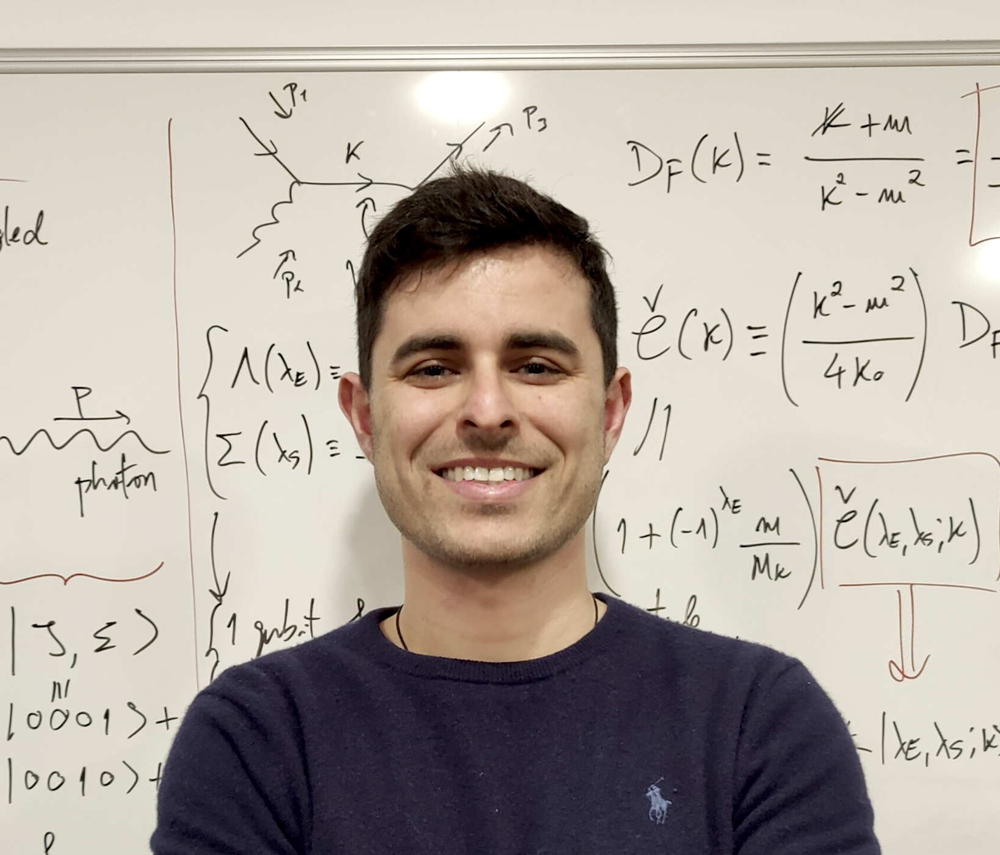

I'm a theoretical physicist working on the unification of the fundamental forces of Nature. My past work includes black holes, quantum field theory in curved spacetime, quantum information and quantum computation.